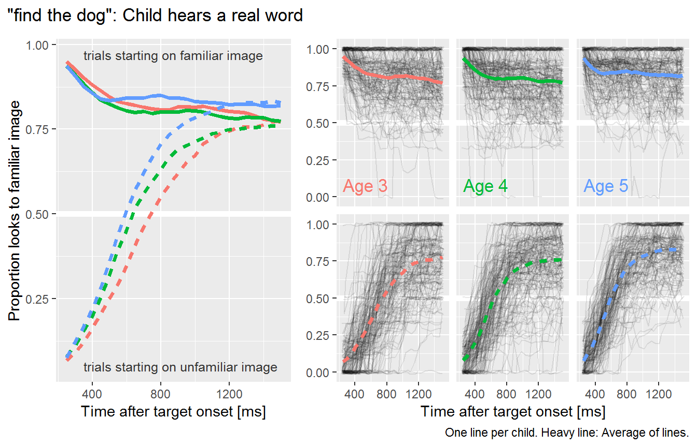
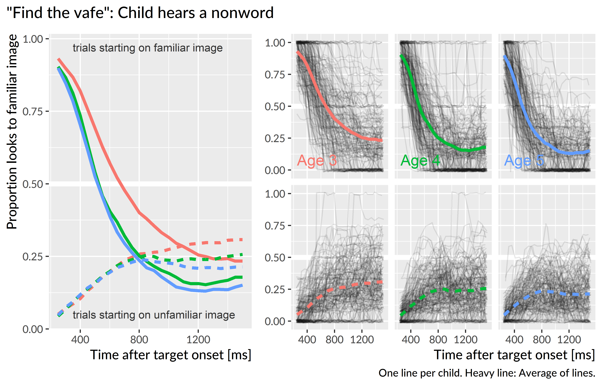
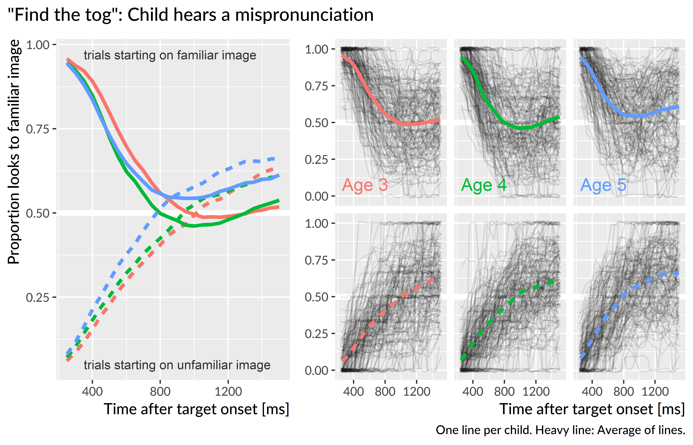

Chapter 9 Method
Data collection for this experiment occurred during the same longitudinal study as the familiar word recognition experiment of Aim 1. Thus, this experiment used the same participants, the same stimulus preparation and style, and the same general experimental procedure as those reported in detail in Chapter 5.
9.1 Mispronunciation task
This experiment is an adaptation of the mispronunciation detection task by White & Morgan (2008) and Law & Edwards (2015). In the experiment, two images are presented onscreen—a familiar object and an unfamiliar object—and the child hears a prompt to view one of the images. In the correct pronunciation (or real word) and mispronunciation conditions, the child hears either the familiar word (e.g., soup) or a one-feature mispronunciation of the first consonant of the target word (shoup). These conditions are designed to test whether children map mispronunciations to novel words. To encourage fast referent selection, there were also trials in a nonword condition where the label was an unambiguous novel word (e.g., cheem presented with images of a bed and a novel-looking pastry mixer). Each nonword was constructed to match the phonotactic probability of one of the mispronunciations. Figure 9.1 shows the screens used in two trials. Importantly, within a block of trials, the child never hears both the correct and mispronounced forms of the same word. A child hearing “duck” then a few trials later hearing “guck” would provide a basis of comparison so that the child can decide that “guck” is probably not “duck”—the design used here avoided this situation.
Figure 9.1: Example displays for a trial in which duck is mispronounced as “guck” (left) and a trial in which the nonword “cheem” is presented (right).
In a block of the experiment, there were 12 trials each from the correct production, mispronunciation, and nonword conditions, and children received two blocks of the task. A complete list of the items used in the experiment over the three years of the study is included in Appendix ??.
9.2 Visual stimuli
The images used in the experiment consisted of color photographs on gray backgrounds. As in the familiar word recognition, these images were piloted in two preschool classrooms. Piloting confirmed that children consistently used the same label for familiar objects. For the novel objects, the children reported to not know a word for the object, or if they did name the object, they did not consistently use the same word for an object.
9.3 Data screening
Table 9.1 shows the numbers of participants and trials excluded during each of year of the study due to unreliable data. There were more children in the second year than the first year due to a timing error in the initial version of this experiment, leading to the exclusion of 30 participants from the first year.
| Dataset | Study | Children | Blocks | Trials |
|---|---|---|---|---|
| Raw | Age 3 | 177 | 341 | 12245 |
| Age 4 | 181 | 349 | 12600 | |
| Age 5 | 164 | 325 | 11736 | |
| Screened | Age 3 | 162 | 305 | 9062 |
| Age 4 | 170 | 320 | 10031 | |
| Age 5 | 157 | 306 | 10113 | |
| Raw − Screened | Age 3 | 15 | 36 | 3183 |
| Age 4 | 11 | 29 | 2569 | |
| Age 5 | 7 | 19 | 1623 |
After mapping the gaze coordinates onto the onscreen images, I performed data screening following the same set of steps as in Chapter 5. To make data quality judgments, I only considered the window from 0 to 2000 ms after noun onset. Next, I identified a trial as unreliable if at least 50% of the looks were missing during the time window, and I excluded an entire block of trials if it had fewer than 18 reliable trials. As an additional criterion, I excluded participants who failed to provide at least 6 reliable trials per experimental condition.
9.3.1 Classifying trials based on initial fixation location
During preliminary visualization of the study-level growth curves, I observed an increasing preference for the unfamiliar image for the nonword condition. The growth curves showed a typical pattern of a baseline at noun onset followed by a quick change in height as the word unfolded. For the nonword condition, this baseline level moved further from .5 (chance with two images) with each year of the study: Children became more likely to fixate on the novel object at the start of these trials.
Because this was a two-image task, I was able to account for the location of the child’s gaze at the onset of the target noun. For each trial, I counted the number of looks to the familiar object and the unfamiliar object during the first 250 ms after target noun onset (specifically, 0 ≤ time < 250 ms). If the majority of the looks landed on the familiar object, then the trial was a familiar-initial trial. An analogous rule labeled trials as unfamiliar-initial trials. Ties were broken by favoring the earlier fixated image. For example, a tie might be a trial with 7 frames of looking to the unfamiliar image, followed by 1 frame between the two images, followed by 7 frames to the familiar image. In this case, the unfamilar image was viewed first, so the trial is classified as unfamiliar-initial. If there were no looks to either image during that window, the trial was not classified for either image and it was excluded.
Table 9.2 shows the number and percentage for the trial classification. The table shows that about 5% of trials were excluded because the child looked to neither image during the first 250 ms of the noun onset. The table also shows how the percentage of unfamiliar-initial trials increased with each year of the study. Accounting for this trend was the rationale for classifying trials based on the initial fixation location.
| Study | Condition | Familiar initial | Unfamiliar initial | Neither/excluded |
|---|---|---|---|---|
| Age 3 | Real word | 1629 (53.7%) | 1250 (41.2%) | 154 (5.1%) |
| Nonword | 1284 (43.8%) | 1453 (49.6%) | 194 (6.6%) | |
| Mispronunciation | 1608 (51.9%) | 1305 (42.1%) | 185 (6.0%) | |
| Age 4 | Real word | 1561 (45.9%) | 1693 (49.8%) | 145 (4.3%) |
| Nonword | 1280 (39.2%) | 1799 (55.2%) | 183 (5.6%) | |
| Mispronunciation | 1686 (50.0%) | 1552 (46.1%) | 132 (3.9%) | |
| Age 5 | Real word | 1718 (50.5%) | 1558 (45.8%) | 125 (3.7%) |
| Nonword | 1172 (35.2%) | 1959 (58.9%) | 194 (5.8%) | |
| Mispronunciation | 1752 (51.7%) | 1487 (43.9%) | 148 (4.4%) |
9.4 Model prepation
To prepare the data for modeling, I downsampled the data into 50-ms (3-frame) bins. For the real word and nonword trials, I modeled looks from XX to XX ms. For the mispronunciation trials, I modeled looks from XX to XX ms. Lastly, I aggregated looks by child, study, condition, initial fixation location, and time, and I created orthogonal polynomials to use as time features for the model.
Figure ?? depicts the results from the real word and nonword conditions following these data screening and preparation steps. The lines start around .5 which is chance performance on this two-image task. The lines rise as the word unfolds and peak and plateau around 1400 ms.



References
White, K. S., & Morgan, J. L. (2008). Sub-segmental detail in early lexical representations. Journal of Memory and Language, 59(1), 114–132. doi:10.1016/j.jml.2008.03.001
Law, F., II, & Edwards, J. R. (2015). Effects of vocabulary size on online lexical processing by preschoolers. Language Learning and Development, 11(4), 331–355. doi:10.1080/15475441.2014.961066